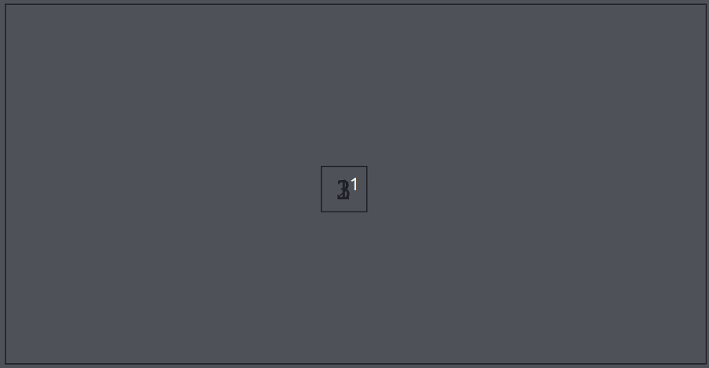

Je kunt op verschillende properties transitions aangeven. Zie hieronder een voorbeeld. Zoek uit op welke properties de transitions zitten en maak het ongeveer hetzelfde na.
Voor elke element en property heb je een andere transitions, sommige hebben zelfs een transition-delay.
transition: transition-property, transistion-duration, transition-timing-function, transition-delay